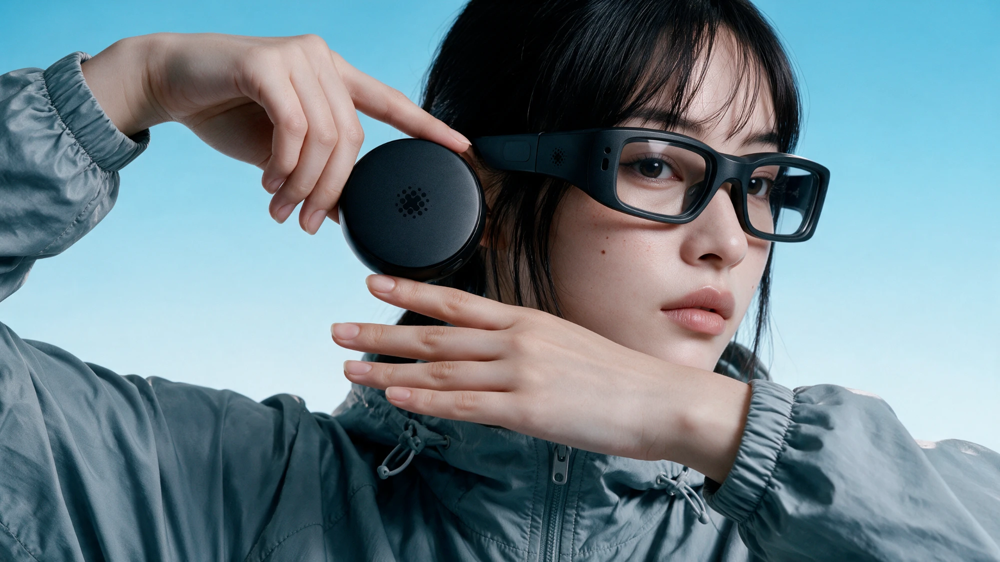
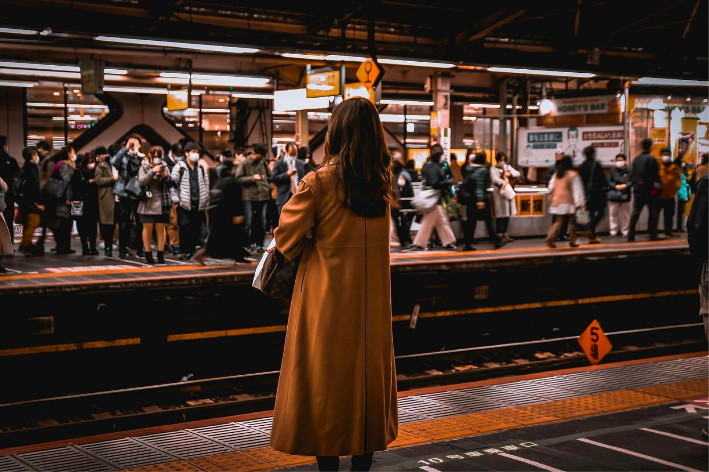
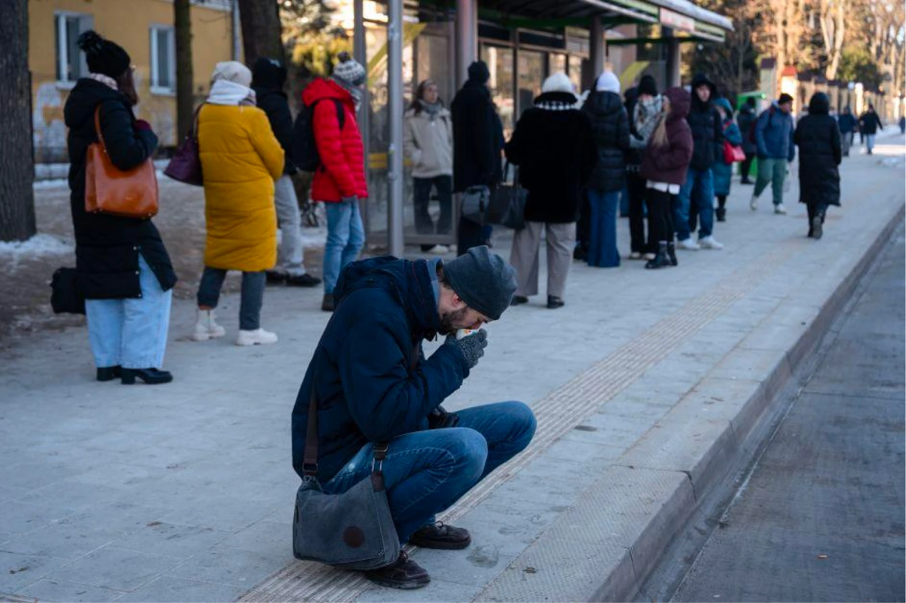

Panic disorder patients grew 1.7× in six years.
GRADIA는 공황 및 불안 증상을 경험하는 사람이 치료 이후에도 일상 속에서 자신의 회복을 이어갈 수 있도록 돕는 회복 가이드 시스템입니다. 병원에서 배운 회복의 방식이 치료실 밖에서도 지속될 수 있도록, 사용자의 상태와 회복 과정에 맞춰 적절한 개입을 제공합니다.

GRADIA는 공황 및 불안 증상을 경험하는 사람이 치료 이후에도 일상 속에서 자신의 회복을 이어갈 수 있도록 돕는 회복 가이드 시스템입니다. 병원에서 배운 회복의 방식이 치료실 밖에서도 지속될 수 있도록, 사용자의 상태와 회복 과정에 맞춰 적절한 개입을 제공합니다.

매년 공황장애 환자들은 증가하는 추세입니다. 2017년 공황 장애 환자 수는 15만명이였지만, 2023년 공황장애 환자 수는 약 25만명에 육박해 6년 사이 1.7배나 증가하였습니다.
또한 10대 불안장애 환자는 2020년 대비 65% 급증하였습니다.

전통적인 노출 치료 접근법으로는 단계적 노출, 홍수 요법을 사용한 집중 노출, 단기, 장기 노출, 실제 환경 노출 등이 있습니다. 하지만 이러한 노출 치료는 초기 치료에 성공적으로 반응을 보인 사람들도 치료 완료 후 다시 증상이 나타나는 경험을 발견했습니다. 또한, 실제 노출을 위한 연출은 많은 비용이 들고, 공간적 제약이 존재합니다.


GRADIA는 인지행동치료(CBT)에서 학습한 회복 전략을 일상에서도 이어갈 수 있도록 돕는 웨어러블 시스템입니다. 사용자의 상태와 상황에 따라 자극의 강도를 조절하고, 단계적인 노출과 회복 경험을 축적해 스스로 일상에 적응할 수 있도록 지원합니다.
GRADIA의 심볼 로고와 타이포 로고를 그리드 위에서 구성했습니다. 원형을 기반으로 한 심볼과 둥근 획의 로고타입이 하나의 시스템으로 이어집니다.
GRADIA는 맑은 Mist에서 깊은 Deep Teal로 이어지는 그라디언트 컬러 시스템을 사용합니다. 밝은 시안은 회복이 시작되는 순간의 가벼움을, 깊은 청록은 일상에서 쌓이는 안정감을 나타냅니다. 차분한 Charcoal(#242424)은 이 흐름의 기준점이 됩니다.